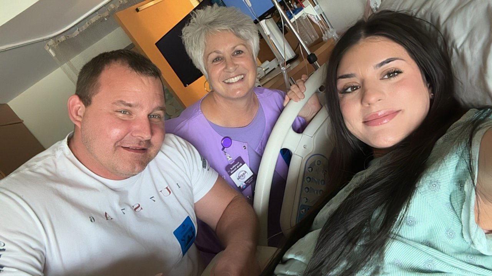
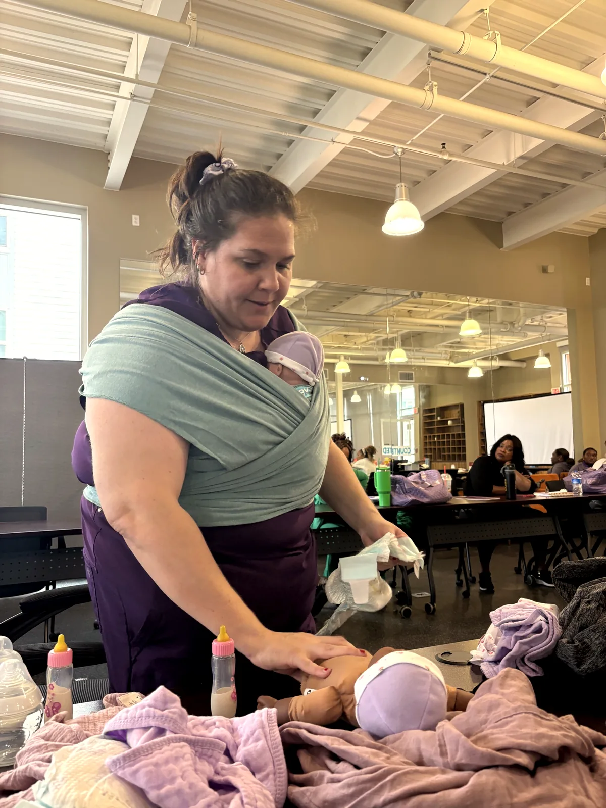

Maternal health in our community and across our nation is in crisis. The women in our communities are the answer.
Every state in this country is failing mothers and babies in ways that don’t have to be true. We didn’t wait to be saved. We decided here to do something. We trained ourselves, showed up for each other, and built a network strong enough to change outcomes. The evidence behind doula care is overwhelming, and every family deserves it. Community supporting community, one birth at a time.

Updated as of November 1, 2026
How Mary’s Hands came to be.
A short history.
Mary’s Hands Network was founded as a Louisiana 501(c)(3) in March 2023. Our first cohort of ICEA-track doulas trained that June. By 2024 the volunteer network had expanded across multiple Louisiana healthcare regions, and the postpartum visit protocol was formalized.
In 2025 we partnered with Baton Rouge General Medical Center and opened IRB Protocol #2025-001, tracking every birth outcome under formal research conditions.
Where we serve.
MHN doulas serve families in six of Louisiana’s nine healthcare regions, with the highest concentration in the Greater Baton Rouge and New Orleans metro areas, and growing networks in Lafayette, Shreveport, and Lake Charles. Expecting in Louisiana? You are eligible to apply for free doula support, regardless of income, insurance, or location.
Why we are named for Mary of the Visitation.
In the Christian tradition, a teenage Mary travels to the hill country to visit her cousin Elizabeth during Elizabeth’s pregnancy. She stays for three months. The gospel records no advice and no intervention. Only presence.
The Greek word doulé (δουλη) means “a woman who serves.” That is the first doula in written history, and she is our inspiration. Every volunteer who trains with us is carrying on a two-thousand-year-old practice of accompaniment.
We doula like the original doula. Continuity, presence, showing up. That is the work.
Louisiana ranks among the worst U.S. states for maternal and infant health.
Our maternal mortality rate is nearly twice the national average. Black women face a mortality risk three to four times higher than white women. Preterm birth and cesarean rates exceed national norms. These are not abstract statistics. They are the families our doulas walk alongside.
The research is also clear: continuous doula support reduces cesareans, lowers preterm birth, improves breastfeeding initiation, and increases parental satisfaction. This is the gap Mary’s Hands Network was built to address.
Built one cohort, one family, one birth at a time.
Our staff, our cohorts, our families, our community.
 Our staff
Our staff
Newborn care practice In training
In training In community
In communityA working board, a grounded staff.
Governed by a working board of clinicians, healthcare leaders, attorneys, and finance professionals, and run day-to-day by a staff team rooted in the Louisiana communities we serve.
Staff
Madeline LeBlanc, MHA, RNC-OB, IBCLC, IAT
Founder & Executive DirectorMadeline holds an MHA and is credentialed as an RNC-OB, IBCLC, and ICEA Approved Trainer. Her career spans healthcare workforce partnerships, nursing education, and direct nursing and doula services. She founded Mary’s Hands Network in 2023.
Read more +Breea Carter, MBA, ICBD-PD
Operations DirectorBreea holds an MBA and is a certified birth and postpartum doula with a background in nonprofit marketing and administration. She is the 2025 Louisiana AmeriCorps Volunteer of the Year.
Read more +Kerionne Lewis, ICPD
Training and Programs CoordinatorKerionne holds a bachelor’s degree and brings prior nonprofit administration experience to her work at MHN, managing doula scheduling, team matching, and day-to-day volunteer support.
Read more +Abria Scott
Network DoulaAbria holds a bachelor’s degree in Biology and English. As MHN’s full-time doula, she provides physical, emotional, and informational support to birthing families across Baton Rouge.
Read more +Trisha Thatai
Communications CoordinatorTrisha is a volunteer with Serve Louisiana AmeriCorps for the 2026–2027 service term, managing social media, marketing, and volunteer engagement.
Read more +Board of Directors
Carol M. Patin, MD
Board President · OB-GYNA board-certified OB-GYN with more than 35 years of experience across Baton Rouge, now practicing at Open Health. A graduate of Xavier University.
Read more +Willie Denine Hobdy, MHA
Vice PresidentSenior Manager of Clinical Operations at Upward Health, with an MHA from LSU Shreveport and 12+ years of nonprofit board experience. A trained MHN doula.
Read more +Sara Downing, CPA
TreasurerA Certified Public Accountant with a background in nonprofit finance, leading MHN’s financial oversight, audit preparation, and reporting to funders.
Read more +Patrick “Pat” Seiter, JD
Board MemberGeneral Counsel for Woman’s Hospital of Baton Rouge from 2020–2024 and Best Lawyers’ “Lawyer of the Year” for Healthcare Law in 2013 and 2016.
Read more +Michelle Dennis, PhD, RN
Director of Education & TrainingA registered nurse with a PhD at FMOLHS and former Dean of Nursing at Baton Rouge Community College, overseeing training delivery and curriculum.
Read more +Erin Douget, CFRE
Board MemberA Certified Fund Raising Executive with 12+ years of experience in nonprofit development, philanthropy, and community partnerships.
Read more +Every birth deserves a doula.
Apply for free support, join a cohort, or fund the next birth.